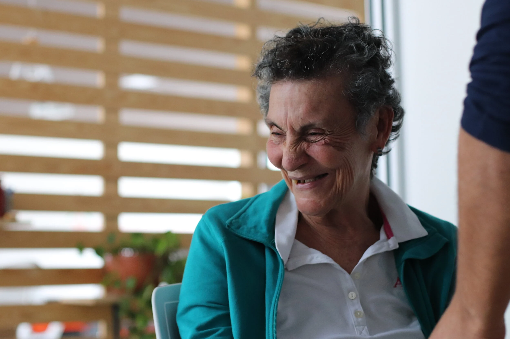
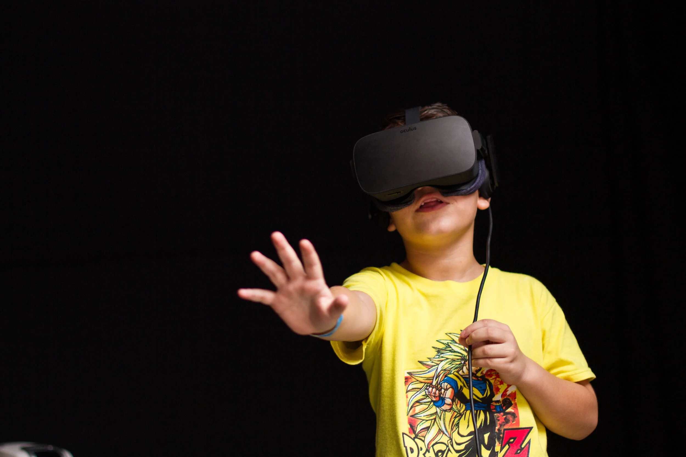
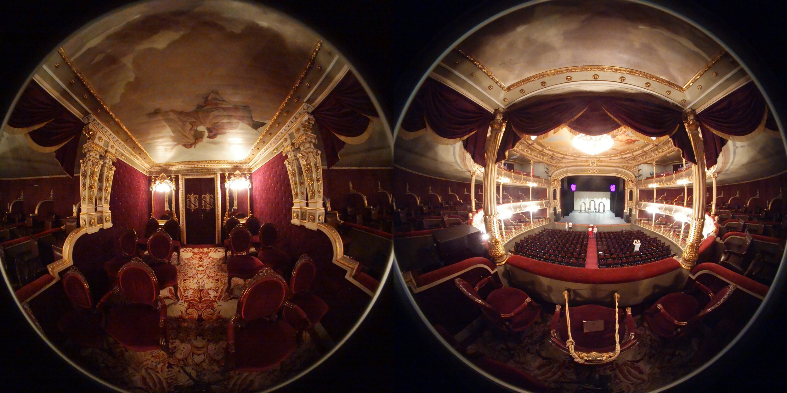
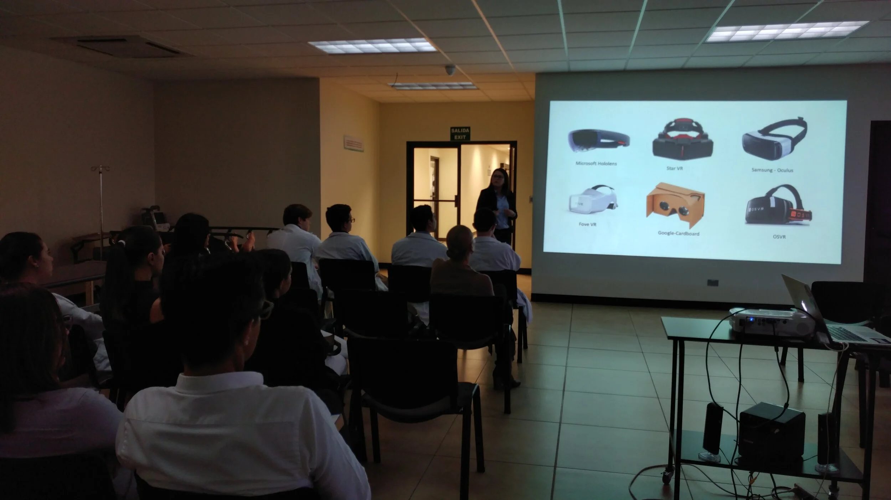
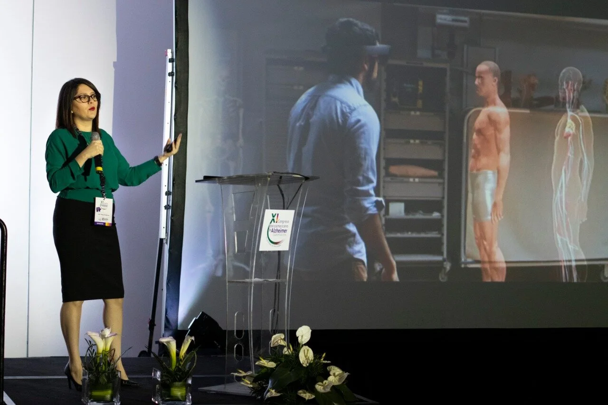
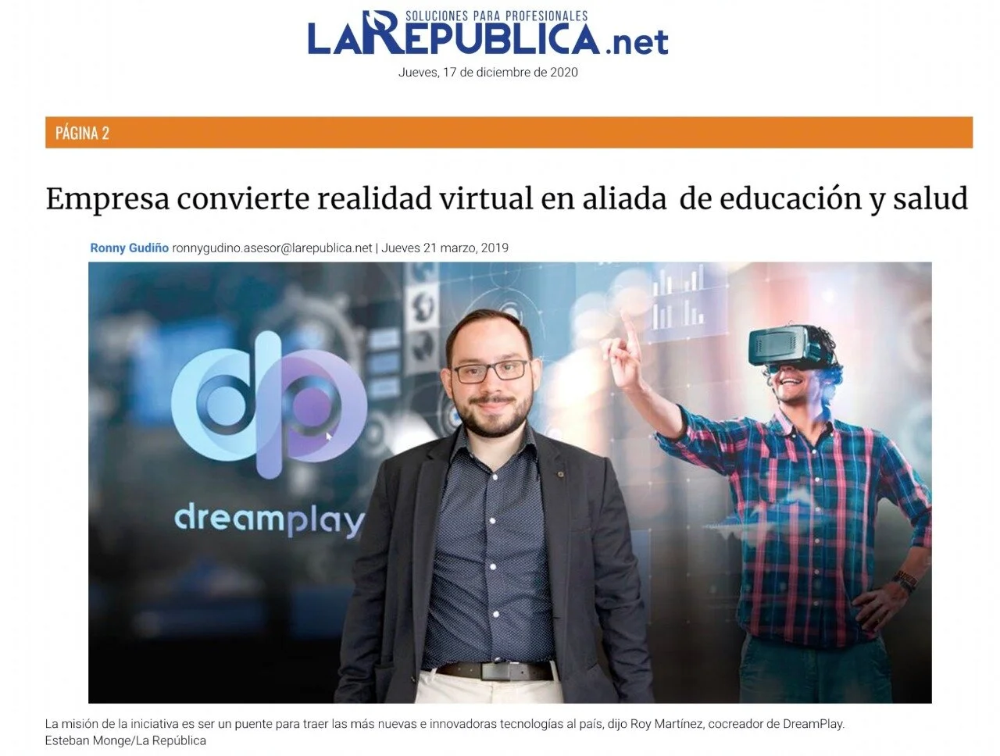
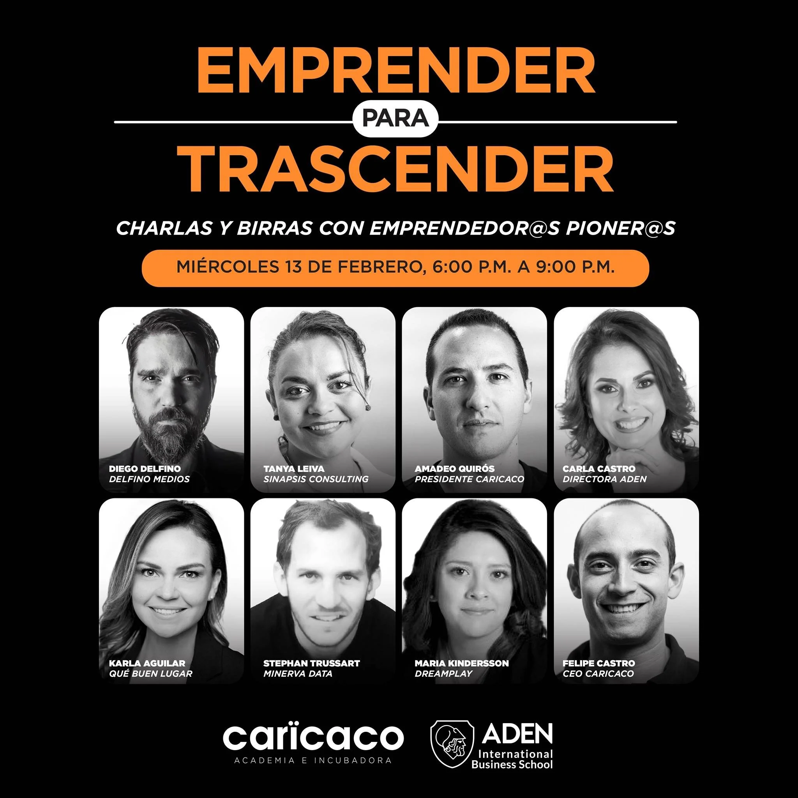
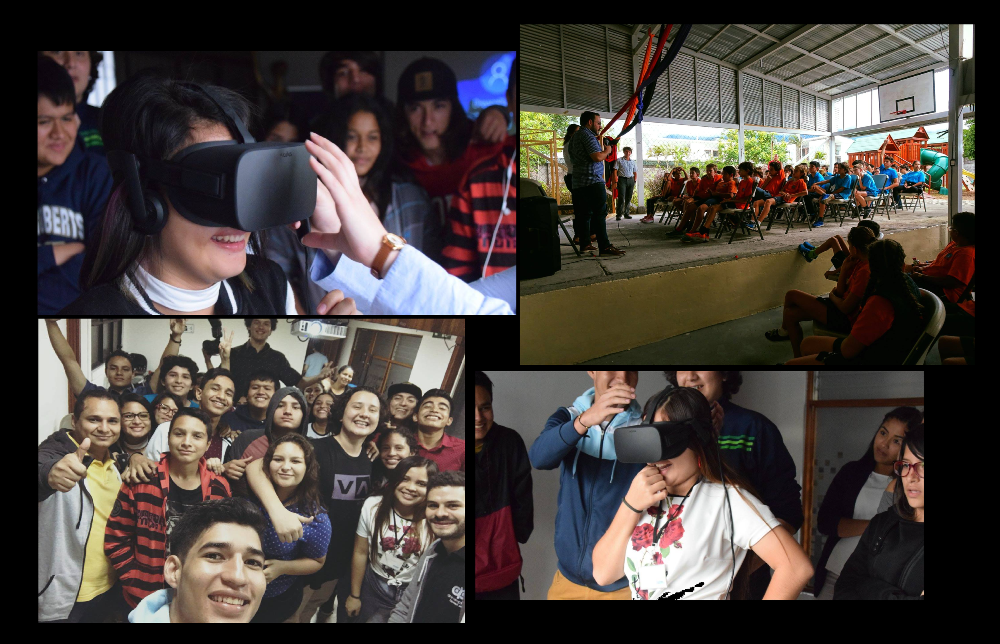

Stories

Healthcare & VR
VR Therapy for Alzheimer's Patients
In partnership with Costa Rica's National Psychiatric Hospital, we developed a virtual reality therapy program to enhance cognitive, motor, and psychosocial outcomes for Alzheimer's patients. This project, led by therapist Alexis Cruz and dedicated to Doña Marta, brought immersive technology into compassionate caregiving.
Read on Medium
Education & STEM
Museo de Los Niños STEM Partnership
A weekend STEM event featuring programming bootcamps, robotics workshops, interactive talks, and VR experiences — all designed to inspire youth interest in technology. The success of this collaboration led directly to a partnership with Google Expeditions, bringing immersive field trips to schools across Costa Rica.

Culture & VR
TEDx Virtual Reality Tour of Teatro Nacional
In collaboration with Deloitte, we created an immersive VR experience of Costa Rica's iconic Teatro Nacional (National Theater), making this historic landmark accessible online to audiences worldwide who could never visit in person.

Healthcare & Education
Medical Education at UCIMED University
Partnering with UCIMED University and their Centro de Simulación, we developed a VR application to support medical student and staff training through advanced simulation technology — improving outcomes without putting patients at risk.

Regional Initiative
Ibero-American Alzheimer's Collaboration
A regional effort involving Grupo Ermita (Guatemala) and Universidad Galileo, sharing VR methodologies and public health technologies across Latin America — amplifying our impact beyond Costa Rica's borders.

Press & Media
Media Coverage
Curated publications and industry highlights covering DreamPlay's work in VR, accessibility technology, and social impact across Costa Rica and Latin America.

Entrepreneurship
Startup Coaching
Through partnerships with Caricaco Incubator and Aden International Business School, we provided mentorship and coaching to emerging entrepreneurs — passing on lessons learned building DreamPlay from the ground up.

Youth Empowerment
Educational Outreach
Programs providing tools, skills, and mentorship for youth to create their own digital content and virtual worlds — turning them from consumers of technology into creators.